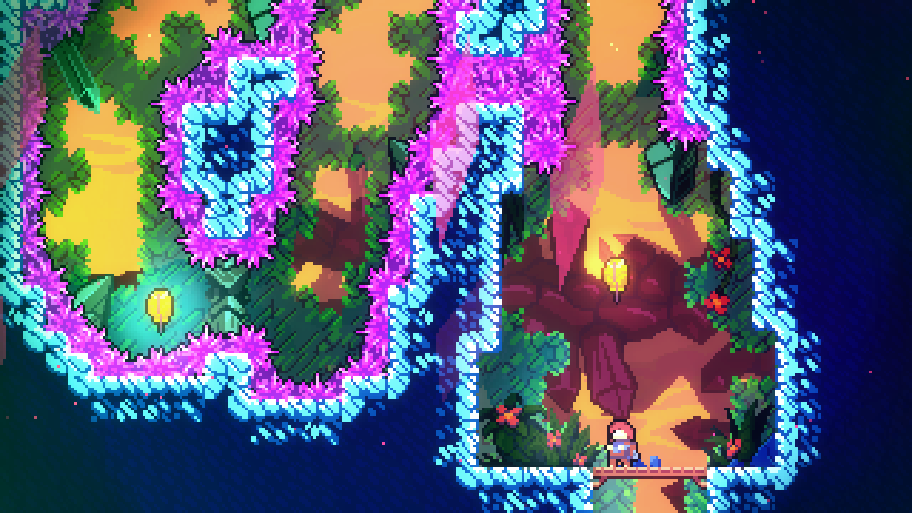
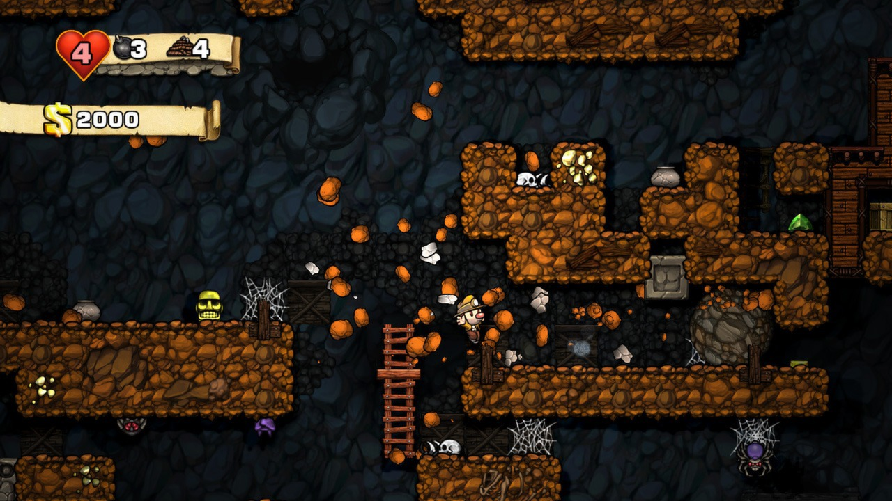
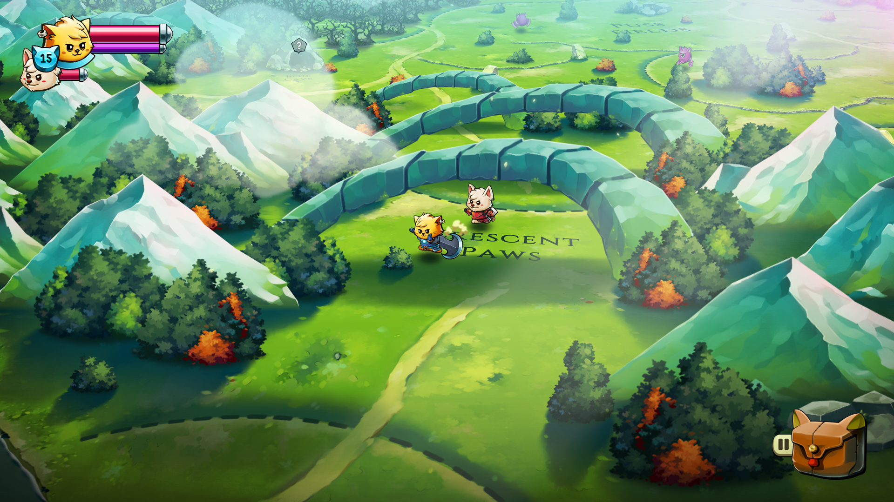
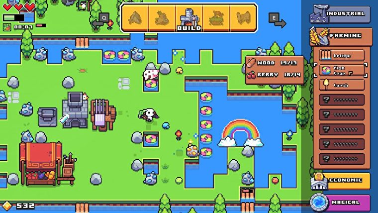

AAA video games have gotten remarkably similar to each other over the last generation, with publishers becoming less-willing to bet on creative and unique ideas as they focus on established franchises. Indie games — those created by independent developers without the backing of a major corporate publisher — don’t have this problem. In recent years, many indie games have managed to surpass their AAA competition in terms of quality, and the notion that indie games are somehow “lesser” because of their lower budget is not accurate. In fact, if you ignore indie games, you’re missing out on some of the best video games of all time. Here are the 4 best indie games you should be playing right now.
Celeste
Spelunky
Cat quest 2
Forager
Celeste, Spelunky, Cat quest 2, Forager